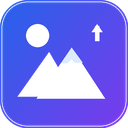

右键图片，在新标签页拿到最高画质 · 自动解析懒加载 / srcset / 背景图
一行一个域名，也支持逗号分隔。域名会同时匹配子域名，例如 weibo.com 会匹配
m.weibo.com。留空表示所有网站都启用。
这些规则集中在 src/resolver.js，站点改版后只需改一行正则。
部分 CDN 使用签名地址（Instagram、Facebook、抖音等），地址与签名绑定，改一个字符就会 403； 还有站点需要登录 Cookie。遇到这种情况，本扩展会保留页面当前地址，不会生成坏链接。
为了显示原生图片菜单，扩展需要在图片上放一层几乎透明的代理图片。网站自己的图片右键菜单可能因此失效。
按住 Alt 再右键可跳过扩展，使用网站原本的菜单；也可以在“网站例外”里停用该站。
不会。扩展只在本机读取当前页面的图片地址，不发送任何统计或页面内容。唯一的网络请求是你主动打开的图片标签页。
原图助手 v1.0.5 · 本地扩展，代码可审计